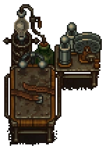

Resurrection table
| Resurrection table | |
|---|---|
 | |
Basic information
| |
Required Technology :
|
Second chance |
Related pages :
|
Corpse, Zombies |
Building Information
| |
Horizontal x Vertical :
|
5x4 |
Rotatable :
|
False |
Location(s)
| |
| Morgue | |

The resurrection table is used to resurrect  zombies from
zombies from  corpses. Resurrection is only available for bodies of at least 90% body quality. You can reduce body decay by embalming.
corpses. Resurrection is only available for bodies of at least 90% body quality. You can reduce body decay by embalming.
To create a zombie, place a  corpse onto the table, and make sure you have 10x Faith and 1x Zombie Juice either in a mortuary rack or in your inventory. Hit "E" at the table and choose the "Resurrect" button to start the process. You can also hit "Take body" to cancel the action and empty the table again.
corpse onto the table, and make sure you have 10x Faith and 1x Zombie Juice either in a mortuary rack or in your inventory. Hit "E" at the table and choose the "Resurrect" button to start the process. You can also hit "Take body" to cancel the action and empty the table again.
Cost
| Icon | Materials Required | Energy | Notes |
|---|---|---|---|

|
4× Wooden plank 4× Complex iron parts |
Meet Gunter and then unlock Second chance. | |
| 1× 10× Faith 1× zombie juice |
Put everything onto the table and select "Resurrect." |
| ||||||||